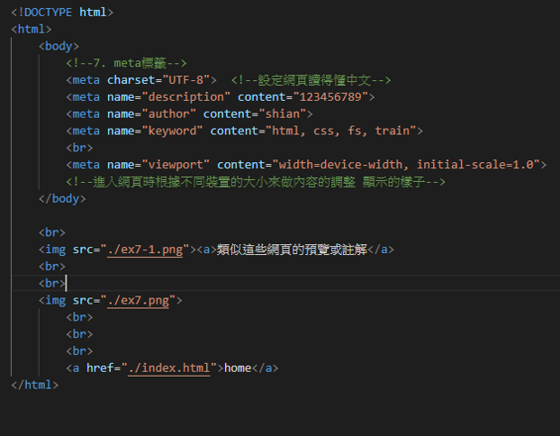

<!DOCTYPE html>    
<html>
    <body>
        <!--7. meta標籤-->
        <meta charset="UTF-8">  <!--設定網頁讀得懂中文-->
        <meta name="description" content="123456789">   
        <meta name="author" content="shian">
        <meta name="keyword" content="html, css, fs, train">
        <br>
        <meta name="viewport" content="width=device-width, initial-scale=1.0">
        <!--進入網頁時根據不同裝置的大小來做內容的調整 顯示的樣子-->
    </body>
    <br>
    
    <br><br><hr><hr>
    <h1><b>Code</h1>
    <ul style="background-color: rgb(249, 255, 158) ;">
    <span style="color: rgb(0, 87, 201); font-size: 20px ;">1.  <</span>
    <span style="color: rgb(0, 87, 201); font-size: 20px ;">meta charset </span>
    <span style="font-size: 20px;"> ="UTF-8"> </span>
    <br>
    <span style="color: rgb(22, 146, 22);">"  # meta charset="UTF-8" 設定網頁讀得懂中文 "</span>
    <br>

    <span style="color: rgb(0, 87, 201); font-size: 20px ;">2.  <</span>
    <span style="color: rgb(0, 87, 201); font-size: 20px ;">meta name </span>
    <span style="font-size: 20px;"> ="description"  </span>
    <span style="color: rgb(0, 87, 201); font-size: 20px ;">content </span>
    <span style="font-size: 20px;"> ="123456789">  </span>
    <br>
    <span style="color: rgb(22, 146, 22);">"  # meta name設定網頁顯示得註解(介紹, 描述, keyword, 作者, 年份等等註解), content則是註解顯示的內容  "</span>
    <span style="color: rgb(22, 146, 22);">"  # 如果content中輸入width=device-width, initial-scale=1.0 意思是說不管在哪個裝置打開這個網頁 都是維持1倍的倍率顯示(也就是不放大) "</span>
    <br>
    <br>
    <p>這些指令類似這些網頁的預覽或註解</p>

        <br>
        <a href="../index.html">home</a>
</html>